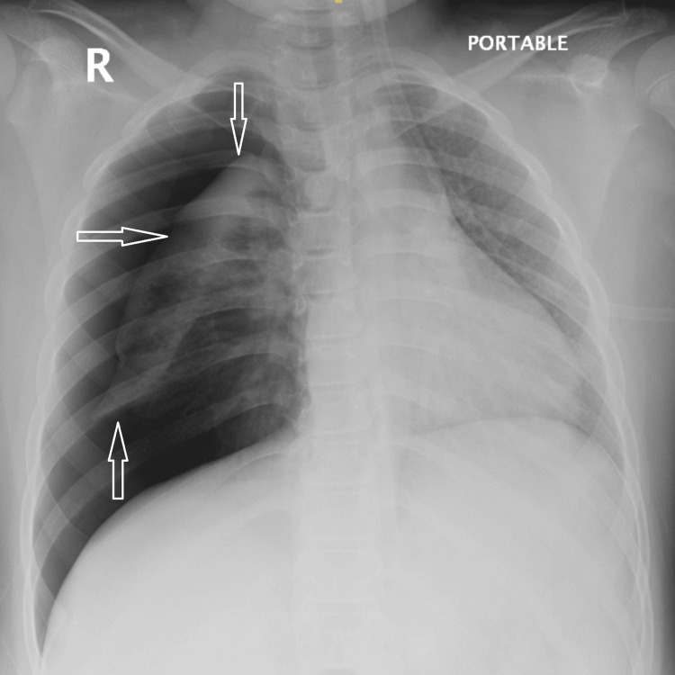
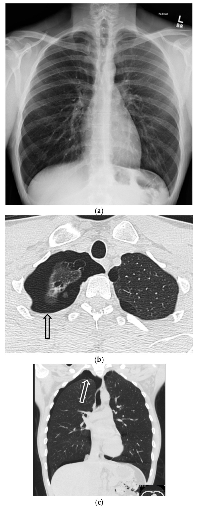
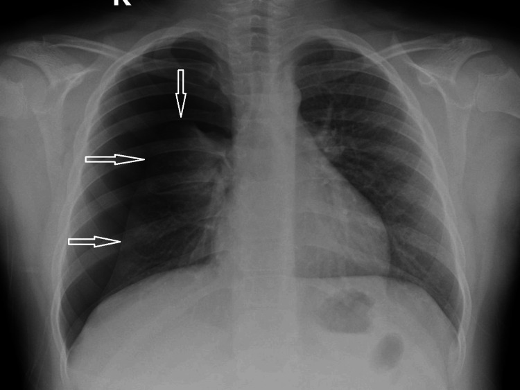
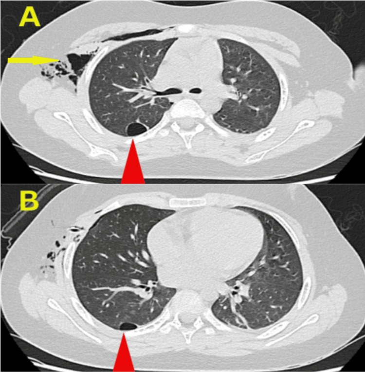
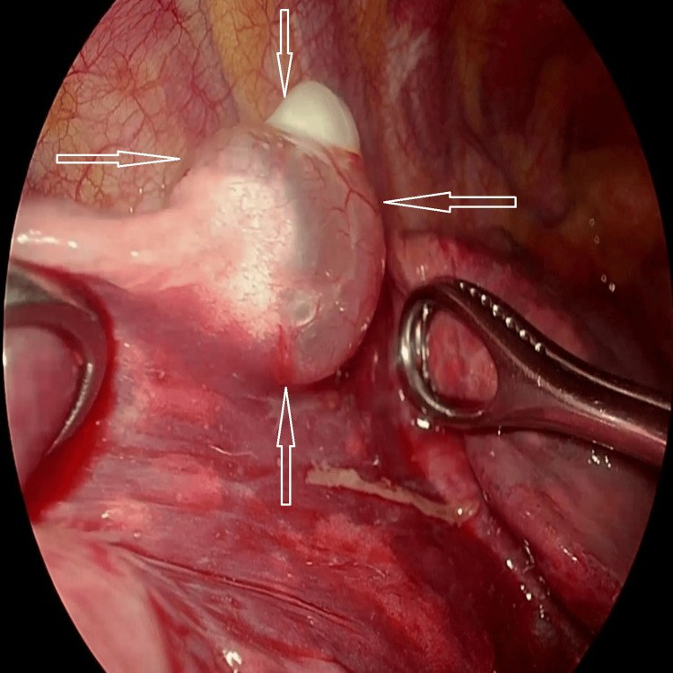

601 — Tràn khí màng phổi tự phát ở trẻ lớn & vị thành niên: bóng khí (bleb/bulla), ngưỡng tái phát và chỉ định mổ nội soi (VATS)
Tags: pattern:tran-khi-mang-phoi pattern:bong-khi vung:phoi vung:mong-phoi protocol:CT-lat-mong score:BTS-2cm
Mức chắc chắn (certainty): tổng hợp y văn (literature synthesis) — bài tự biên từ các nguồn mở 2023–2026 (PMC12820897, PMC12656181, PMC12428816, PMC11228730, PMC13444301, PMC13077400, PMC10439191, PMC10790175, PMC10509123) + ca nguyên văn 9 tuổi của Yehya 2025 cho phần ảnh.
1. Tổng quan bệnh học – cơ chế hình ảnh
- Định nghĩa: tràn khí màng phổi tự phát (spontaneous pneumothorax — SP) là khí trong khoang màng phổi không do chấn thương, không do can thiệp. Nguyên phát (primary — PSP) khi không có bệnh phổi nền; thứ phát (secondary — SSP) khi có bệnh phổi nền (hoặc > 50 tuổi + hút thuốc nhiều được xếp vào nhóm thứ phát vì đáp ứng kém với chọc hút).
- Tần suất ở trẻ: khoảng 1–4/100.000 trẻ; phần lớn bằng chứng điều trị ngoại suy từ người lớn, còn nghiên cứu nhi chủ yếu là ca lâm sàng (PMC12820897).
- TẠI SAO có bóng khí (bleb/bulla): PSP "nguyên phát" thực ra có bất thường dưới màng phổi: bleb = khoang khí ≤ 1 cm giữa hai lá màng phổi tạng (thành < 1 mm**); **bulla** = khoang khí **> 1 cm. Khi bleb/bulla vỡ → khí vào khoang màng phổi. Vì vậy thấy bleb trên CT là yếu tố dự báo tái phát (p < 0,001 ở nhóm vị thành niên), và phần lớn tái phát xảy ra trong 10,5 ± 9,9 tháng (phải) / 12,7 ± 9,1 tháng (trái) (PMC12428816).
- TẠI SAO hình ảnh trông như vậy (vật lý):
- Khí trong khoang màng phổi ≈ −1.000 HU, đẩy phổi co lại → trên phim thẳng đứng thấy đường màng phổi tạng (visceral pleural line) chạy song song thành ngực, mất tuần hoàn phổi ngoại vi.
- Nằm ngửa (phim portable): khí tụ phía trước–dưới → dấu rãnh sâu (deep sulcus sign) ở góc hoành, dễ bỏ sót nếu chỉ nhìn đỉnh phổi.
- CT: cửa sổ phổi (lung window) thấy bóng khí thành mỏng; bóng khí lớn (bulla) có thành cong lồi vào trong — khác đường màng phổi tạng cong lõm ra ngoài của tràn khí.
- Ngưỡng định lượng bắt buộc:
- "Lớn" theo SPLF 2023: có dải khí sáng dọc toàn bộ đường nách VÀ ≥ 2 cm ở ngang rốn phổi trên phim thẳng; < 2 cm = nhỏ (PMC10509123). BTS cũng dùng mốc 2 cm ở rốn phổi.
- Tái phát sau điều trị không mổ: chọc/dẫn lưu bằng ống ngực 28,0%, chỉ oxy 17,8%; VATS ngay lần đầu: 0% trong cohort (PMC13444301).
- Tái phát sau VATS (gộp 72 nghiên cứu, 23.531 bệnh nhân): 10% (KTC 95%: 8–12%) (PMC11228730).
- Tuổi ≤ 19 (so với 20–29): tái phát cùng bên 12,3% vs 3,9% (P = 0,005); tràn khí bên đối diện 18,1% vs 4,6% (P < 0,001) (PMC13077400).
- Dữ liệu toàn quốc Hàn Quốc (20,3% tái phát chung): nhóm mổ có tái phát 5 năm 23,7% so với bảo tồn 7,9% — nghịch lý do chỉ định (ca nặng/bleb nhiều mới được mổ), không có nghĩa "mổ làm tăng tái phát" (PMC10439191).
2. Mẫu hình + chẩn đoán phân biệt theo cơ chế & vị trí (gamut)
- Bóng khí ĐỈNH phổi (điển hình PSP): bleb/bulla ở đỉnh, thường nhiều ổ, thành mỏng; gặp ở nam trẻ, gầy, hút thuốc.
- Bóng khí ĐÁY/paraseptal (không điển hình — dễ bỏ sót): dọc vách liên thùy, đáy phổi, đỉnh thấp — gắn với thuốc lá điện tử/vaping, cần sa; phim thẳng có thể bình thường (PMC12656181).
- Bóng khí ở thùy DƯỚI: như ca 9 tuổi dưới đây — bullae ở đoạn đỉnh thùy dưới phải, không thấy trên phim thường → chỉ CT mới phát hiện (PMC12820897).
- Bệnh nang phổi (SSP): Birt–Hogg–Dubé (nang đáy phổi + u da + ung thư thận), LAM, Langerhans cell histiocytosis (nang kỳ quái + nốt), Marfan/Ehlers–Danlos, CF, hen.
- Nguyên nhân ngoài phổi: tràn khí kinh nguyệt (catamenial) do lạc nội mạc màng phổi (thường bên phải, trong 48–72 giờ quanh kỳ kinh), u/di căn hoại tử, áp-xe phổi.
- Bắt chước (mimic) — không phải tràn khí: bulla khổng lồ (thành lồi vào trong, không có màng phổi tạng), nếp da (skin fold), nếp ga trải giường, bả vai, bóng khí trong dạ dày/đại tràng dưới hoành.
- Mnemonic "BLEBS": Birt–Hogg–Dubé, LAM, Ehlers–Danlos/Marfan, Bleb/paraseptal (thuốc lá, vaping), Smoking/SSP ở người lớn.
3. Bảng so sánh phân biệt (ma trận đối chiếu)
| Thực thể (entity) | Hình ảnh điển hình | Chốt vào (rule-in) | Chốt loại (rule-out) | Gợi ý xác nhận |
|---|---|---|---|---|
| PSP có bleb đỉnh | Đường màng phổi tạng ở đỉnh, bóng khí thành mỏng ≤ 1 cm, không bệnh nhu mô | Bleb/bulla trên CT + nam trẻ gầy + hút thuốc/vaping | Nang nhiều thùy, nang đáy, tổn thương nhu mô → nghĩ SSP | CT lát ≤ 1 mm; so phim cũ |
| PSP bóng khí thùy dưới | Phim thẳng có thể bình thường; CT: bulla đoạn đỉnh thùy dưới | CT thấy bulla > 1 cm ở thùy dưới + tái phát sớm (10 ngày) | Không thấy bóng khí trên CT lát mỏng → cân nhắc nguyên nhân khác | CT trước khi quyết định mổ |
| SSP do BHD/LAM/LCH | Nang đáy (BHD), nang tròn đều (LAM), nang + nốt (LCH), tràn khí tái phát nhiều lần | Nang hai bên + bệnh da/thận (BHD) hoặc nang lan tỏa (LAM) | Chỉ một bleb đơn độc, nhu mô còn lại bình thường → PSP | HRCT; tư vấn di truyền (BHD — FLCN) |
| Bulla khổng lồ (mimic) | Vùng sáng lớn, thành cong LỒI vào trong, vách mảnh, không có màng phổi tạng | Thành lồi vào trong + không thay đổi khi hít vào | Có đường màng phổi tạng cong lõm + mất mạch ngoại vi → tràn khí thật | CT; so sánh 2 thì hô hấp |
| Nếp da / vật ngoài (artifact) | Đường sáng thẳng, chạy ra ngoài lồng ngực, không có mạch máu bờ | Đường sáng vượt khỏi lồng ngực + không thấy màng phổi tạng | Có màng phổi tạng + mất tuần hoàn ngoại vi → tràn khí thật | Đổi tư thế/khám lại; siêu âm (điểm phổi) |
| Tràn khí kinh nguyệt | Tràn khí bên phải, tái diễn theo chu kỳ, có thể thấy nốt/mảng màng phổi | Tái phát trong 48–72 giờ quanh kỳ kinh + bên phải | Không liên quan chu kỳ → PSP/SSP khác | MRI khung chậu; nội soi lồng ngực |
4. Protocol chụp + ngưỡng xử trí + thuật toán
Chụp gì, khi nào:
- Phim ngực thẳng đứng (PA) là bước đầu; nếu bệnh nhân nằm → phim AP portable và chủ động tìm dấu rãnh sâu.
- CT ngực lát ≤ 1 mm, cửa sổ phổi, thì hít vào — chỉ định: tái phát, phim không giải thích được triệu chứng, nghi bệnh nang/di truyền, trước mổ để lập kế hoạch cắt bóng khí. Ở trẻ, CT không cần cho mọi ca PSP điển hình (không thêm giá trị chẩn đoán khi phim đã rõ), nhưng có giá trị trước mổ (PMC10460625).
- Siêu âm phổi tại giường: mất trượt màng phổi + điểm phổi (lung point) + mã vạch (barcode) — hữu ích khi không di chuyển được bệnh nhân.
- Đo kích thước: đo khoảng cách màng phổi tạng – thành ngực ở ngang rốn phổi, ghi bằng mm; ≥ 2 cm = lớn. Đừng chỉ ước lượng "nhiều/ít".
Thuật toán xử trí (người lớn + ngoại suy cho trẻ lớn):
flowchart TD
A[Đau ngực đột ngột + khó thở, nghi tràn khí] --> B[CXR thẳng đứng: đo >= 2 cm ở rốn phổi?]
B -->|Không, không khó thở| C[Bảo tồn: theo dõi + oxy; khám lại 24-48 giờ]
B -->|Có >= 2 cm hoặc khó thở| D{Tràn khí ÁP LỰC? tụt HA, lệch trung thất?}
D -->|Có| E[Chọc giải áp NGAY bằng kim, sau đó đặt ống ngực]
D -->|Không| F[Chọc hút bằng kim hoặc đặt ống ngực]
F --> G{Còn rò khí > 5 ngày / phổi không nở / tái phát?}
G -->|Có| H[VATS: cắt bóng khí + làm dính màng phổi]
G -->|Không| I[Rút ống khi hết rò >= 24 giờ + phổi nở]
C --> J{Tái phát cùng bên / tràn khí đối diện / hai bên?}
J -->|Có| H
Chỉ định mổ (dựa trên BTS/ERS, áp dụng cho trẻ lớn):
- Tràn khí cùng bên lần thứ 2, tràn khí đối diện lần đầu, tràn khí hai bên đồng thời.
- Rò khí dai dẳng (persistent air leak — PAL) — ngưỡng dùng phổ biến > 5 ngày / > 15–20 mL/phút (xem bài 618); không có ngưỡng thống nhất tuyệt đối, đây là điểm tranh luận.
- Nghề nguy cơ: phi công, thợ lặn; thể thao đối kháng — tư vấn riêng.
- Thất bại điều trị bảo tồn hoặc phổi không nở (trapped lung).
- Kỹ thuật: VATS 3 cổng hoặc 1 cổng (uniportal) — cắt bóng khí bằng stapler + làm dính màng phổi cơ học/hóa học; bằng chứng hiện không chứng minh uniportal ưu việt ở tràn khí tái phát (PMC12820897).
5. Biến thể bình thường và cạm bẫy
- Phim thẳng bình thường KHÔNG loại trừ bóng khí: ca vaping dưới đây có CXR bình thường nhưng CT thấy khí paraseptal + bleb/bulla hai đỉnh và tràn khí nhỏ (PMC12656181). Triệu chứng + CT quyết định.
- Bỏ sót tràn khí nhỏ ở bệnh nhân nằm ngửa: khí tụ trước–dưới → rãnh sâu, dấu cơ hoành "kép", bờ tim sắc nét bất thường; luôn xem lại vùng đáy và dưới hoành.
- Nhầm bulla với tràn khí: bulla có thành lồi vào trong, mạch máu vắt qua vách; tràn khí có màng phổi tạng cong lõm và mất hoàn toàn tuần hoàn ngoại vi.
- "Điều trị phim, không điều trị bệnh nhân": tràn khí < 2 cm, không khó thở có thể theo dõi bảo tồn kể cả ở người trẻ; ngược lại tràn khí nhỏ ở trẻ có bệnh nang phổi vẫn có thể nguy hiểm (PMC10509123).
- Rút ống quá sớm —— và hút áp lực mạnh: rút khi hết rò ≥ 24 giờ + phổi nở + dịch ít; không hút mạnh ngay vì nguy cơ phù phổi tái nở (re-expansion pulmonary edema) (xem bài 617).
- Sau mổ vẫn còn "khoang khí" trên CT: ổ khí nhỏ dưới màng phổi sau làm dính có thể tồn tại vài tuần, không đồng nghĩa tái phát.
- Đừng quên tràn khí đối diện: nhóm ≤ 19 tuổi có 18,1% tràn khí bên kia trong dài hạn → hướng dẫn bệnh nhân quay lại ngay khi đau ngực đột ngột (PMC13077400).
6. Tự lượng giá — Blind Quiz ngay trên trang tĩnh
Ca 1 — Bé trai 9 tuổi, đau ngực đột ngột, khó thở. Phim chụp tại giường (portable).

- Gợi ý: không chấn thương, không bệnh phổi trước đó.
- Câu hỏi: (1) Mô tả dấu hiệu chính. (2) Tràn khí lớn hay nhỏ, đo ở đâu? (3) Bước tiếp theo và có cần CT ngay không?
Bấm để hiện đáp án (findings + chẩn đoán)
- Findings: đường màng phổi tạng (mũi tên) tách khỏi thành ngực bên phải, mất tuần hoàn phổi ngoại vi, phổi phải xẹp gần hoàn toàn; không thấy bóng khí trong nhu mô trên phim này.
- Kích thước: dải khí rộng > 2 cm ở ngang rốn phổi và chạy dọc toàn bộ đường nách → tràn khí LỚN (SPLF 2023/BTS).
- Xử trí: đặt ống ngực (chest tube); sau khi ổn định → CT ngực lát mỏng để tìm bóng khí (quyết định mổ sau này).
- Vì sao CT: ca này CT phát hiện hai bulla ở đoạn đỉnh thùy dưới phải — vị trí không điển hình, không thấy trên phim.
- Nguồn ảnh: Yehya M et al., Cureus 2025, PMC12820897 Fig. 1 — CC BY 4.0.
Ca 2 — Nam 31 tuổi, đau ngực, có vaping nicotine. Phim thẳng (a) và CT (b–d).

- Gợi ý: phim thẳng không thấy đường màng phổi tạng.
- Câu hỏi: (1) Phim thẳng có bình thường không? (2) CT thấy gì? (3) Vì sao phải chụp CT ở bệnh nhân này?
Bấm để hiện đáp án (findings + chẩn đoán)
- Findings: (a) phim thẳng không rõ tràn khí; (b–d) CT cửa sổ phổi: tràn khí nhỏ bên phải (mũi tên đen) + khí paraseptal và bleb/bulla hai đỉnh (mũi tên trắng đứt).
- Chẩn đoán: PSP nhỏ + bóng khí paraseptal (liên quan vaping) — phim thẳng âm tính.
- Vì sao CT: xác định bóng khí (yếu tố dự báo tái phát, p < 0,001) và loại trừ bệnh nang phổi; đây cũng là cơ sở tư vấn bỏ vaping.
- Nguồn ảnh: Jain R et al., Tomography 2025, PMC12656181 Fig. 29 — CC BY 4.0.
Ca 3 — Bé trai 9 tuổi (ca 1) quay lại sau 10 ngày vì đau ngực tái phát. Phim thẳng (A).

- Gợi ý: lần đầu đã được đặt ống ngực và rút; CT trước đó có bulla thùy dưới.
- Câu hỏi: (1) Chẩn đoán? (2) Vì sao tái phát sớm như vậy? (3) Chỉ định và kỹ thuật điều trị triệt để?
Bấm để hiện đáp án (findings + chẩn đoán)
- Findings: tràn khí phải tái phát cùng bên (mũi tên) sau 10 ngày — tái phát rất sớm.
- Chẩn đoán: PSP tái phát cùng bên lần 2 trên bệnh nhân có bulla thùy dưới:

- Vì sao tái phát: bulla vẫn còn nguyên sau khi chỉ dẫn lưu — ống ngực chỉ giải quyết khí, không loại bỏ nguồn rò.
- Điều trị: VATS 3 cổng + cắt bóng khí (bullectomy) + làm dính màng phổi:

- Chỉ định mổ ở đây: tràn khí cùng bên lần thứ 2 (tiêu chuẩn BTS/ERS); tái phát 10 ngày càng củng cố chỉ định.
- Nguồn ảnh: Yehya M et al., Cureus 2025, PMC12820897 Fig. 4, Fig. 3, Fig. 5 — CC BY 4.0.
Bài liên quan chéo
- 600 – Tổng quan Nhi khoa
- 617 – Hội chứng rò khí ở nhũ nhi (tràn khí màng phổi, tràn khí trung thất)
- 618 – Rò phế quản–màng phổi & rò khí dai dẳng ở trẻ
- 619 – Di chứng hô hấp sau hoại tử phổi & cắt thùy
- 614 – Bệnh tiểu phế quản tắc nghẽn (BO/Swyer–James)
- 020 – Nốt phổi & tiếp cận nốt
- 025 – Hang & nấm phổi (chẩn đoán phân biệt hang/bóng khí)
Không dùng để chẩn đoán độc lập khi chưa có người hướng dẫn.